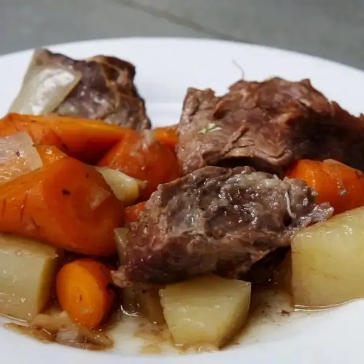

Slow Cooker Pot Roast

Description
A dish that takes only few ingredients to make but yet is packed with so much flavor. So easy that you dump it
all into the slow cooker and let it cook itself for a few hours and voila yu have a dinner when u return back!
Ingredients for 5 servings
- 3 lb chuck roast(1.5 kg)
- salt, to taste
- pepper, to taste
- 1 oz dried onion soup mix(30 g)
- 1 onion, diced
- 3 gold potatoes, diced
- 3 large carrots, chopped
- ½ cup water(120 mL)
Steps
- Place the chuck roast in a 7-quart (6 ½ liters) slow cooker and season with salt and pepper.
- Sprinkle the onion soup pack and top with vegetables and water.
- Cook on low for 8 hours, or high for 4-5 hours.
- Enjoy!
Back to top of page
Go to mac and cheese
Go to veggie garlic noodles